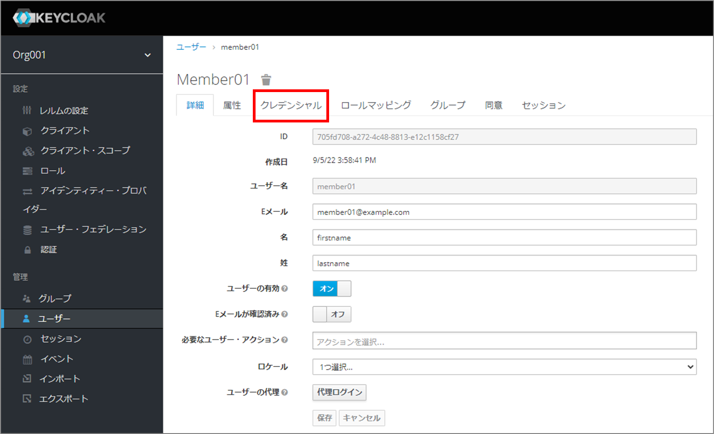

2. ユーザー¶
2.1. はじめに¶
本書では、Exastro Suite におけるユーザーについて説明します。
2.2. ユーザーとは¶
Exastro システムの利用者のことを指します。ユーザーのタイプには大きく分けて下記の3種類が存在します。
システム管理者
オーガナイゼーション管理者
ユーザー
ユーザーのタイプ |
内容 |
|---|---|
システム管理者 |
・Exastro システム全体の管理者です。
・システム全体に関わる操作を実行出来ます（オーガナイゼーションやオーガナイゼーション管理者の作成、リソースプランの設定）。
・オーガナイゼーション内のワークスペース、および、Exastro IT Automation に関する操作は実行出来ません。
|
オーガナイゼーション管理者 |
・オーガナイゼーションの管理者です。
・システム管理者により作成されたオーガナイゼーションに対してユーザーの作成やロールの割当といったオーガナイゼーションの管理をするための操作を実行出来ます。
|
ユーザー |
・上記2つ以外のすべてのユーザーです。
・Exastro の各ツールの操作を実行出来ます。
|
上記のユーザー毎に作成方法が異なりますので、それぞれの方法について説明します。
2.3. システム管理者¶
2.3.1. システム管理者の作成¶
システム管理者は、インストール時に アプリケーションの DB ユーザ設定 で global.keycloakDefinition.secret.KEYCLOAK_USER に指定しインストールした際に作成されます。
2.3.2. システム管理者の追加¶
登録済みのシステム管理者アカウントから新たなシステム管理者アカウントを追加します。
2.3.2.1. 手順¶
- Keycloak管理コンソール(masterレルム)に接続します。
- 接続URL
{システム管理者用サイトアドレス}/auth/admin/master/console/#/realms/master/users
- Keycloakのログイン画面から登録済みのシステム管理者アカウントでログインします。

図 2.4 Keycloakログイン画面¶
注釈
システム管理者アカウントを未登録の場合は、インストール時に platform-secret.yaml に設定し、keycloakの環境変数へ登録されている値でログインします。
{kind=link}
図 2.5 platform-secret.yaml¶
- アカウントの追加を行います。
- の ユーザーの追加 ボタンをクリックします。

図 2.6 Keycloak管理コンソール_ユーザー画面¶
- で、登録するシステム管理者の情報を入力し 保存 ボタンをクリックします。

図 2.7 ユーザー追加画面¶
- ユーザーの追加後の画面で クレデンシャルタブ をクリックします。

図 2.8 クレデンシャルタブ¶
- クレデンシャルタブの画面で、パスワード、新しいパスワード（確認）を入力し パスワードを設定 をクリックします。

図 2.9 パスワード設定¶
注釈
一時的「オン」：該当ユーザーが初回ログイン時、パスワード変更が要求されます。（推奨）
一時的「オフ」：入力したパスワードを、そのまま利用することができます。
- ロールマッピング タブを選択し、レルムロールの中の「admin」をアサイン済みロールに設定します。
{kind=link}
図 2.10 ロールマッピング¶
- システム管理者アカウントの追加完了です。
ユーザーの追加、パスワードの設定、追加したユーザーの「admin」ロールへのアサインをもってシステム管理者アカウントの追加は完了です。
2.4. オーガナイゼーション管理者¶
2.4.1. オーガナイゼーション管理者の作成¶
オーガナイゼーション管理者は、オーガナイゼーション作成時に Organization (オーガナイゼーション) で organization_managers に指定することで作成されます。
2.5. ユーザー¶
2.5.1. ユーザーの作成¶
ユーザーは、下記の方法で作成します。
- Exastro Platformにオーガナイゼーション管理者でログインします。
- Exastro Platformのメニューより をクリックします。

注釈
ユーザー管理権限を有するロールに紐づくユーザー以外でログインしている時は、メニューに は表示されません。ユーザー管理権限を有するロールは以下の3つです。_orgnization-manager,_orgnization-user-manager,_orgnization-user-role-manager - Keycloakのユーザー画面が表示されるので、 ユーザーの追加 ボタンをクリックします。
- Keycloakのユーザーの追加画面が表示されるので、ユーザーの情報を入力して 保存 ボタンをクリックします。

- 登録が正常に終了すると、以下の画面が表示されるので、 タブをクリックします。
 - 「パスワード」および「新しいパスワード（確認）」に初期パスワードを入力し パスワードを設定 をクリックします。

注釈
一時的「オン」：該当ユーザーが初回ログイン時、パスワード変更が要求されます。（推奨）一時的「オフ」：入力したパスワードを、そのまま利用することができます。 - 確認ダイアログが表示されるので、 Set password ボタンをクリックします。

{kind=link}